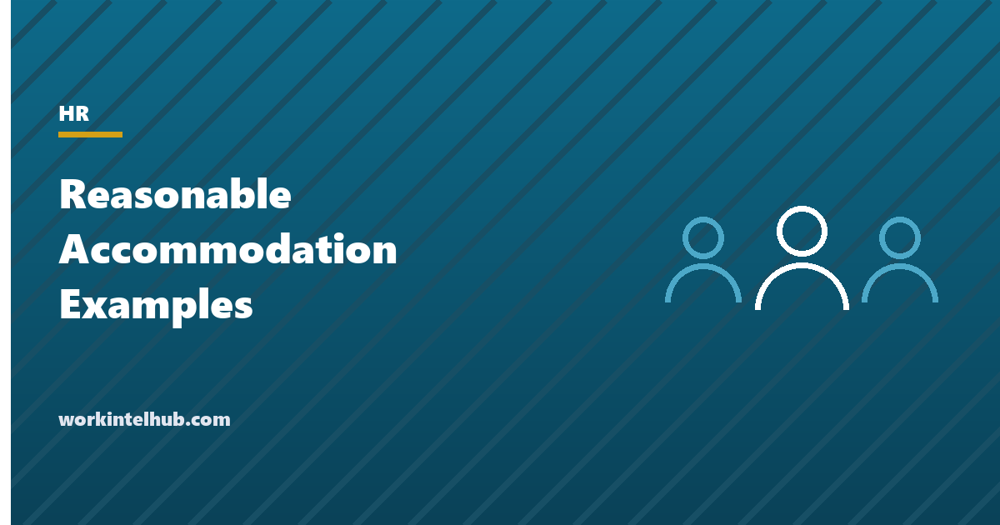

Reasonable Accommodation Examples

A reasonable accommodation is a change to the job, the workplace or the way things are usually done that lets a qualified person with a disability apply for a job, do the job, or enjoy the same benefits as everyone else. The Americans with Disabilities Act requires employers with 15 or more employees to provide one unless it would cause undue hardship, and most states extend the duty to smaller employers. The duty is triggered by a request that need not use any particular words, and it is discharged through a conversation the law calls the interactive process.
The generator below produces a request an employee can submit or an employer can adopt as its form. Below it are forty examples grouped by the limitation they address, the process step by step, what undue hardship actually means, and what the accommodations cost, which is usually nothing.
Accommodation request generator
Nothing typed here leaves your browser. The request describes the limitation and the function affected without naming a diagnosis, which is all the law requires and all an employer is entitled to at this stage. Employers can use the same text as their request form.
Forty reasonable accommodation examples
The EEOC enforcement guidance groups accommodations into changes to the application process, changes to the work environment or the way the job is done, and changes that give equal access to benefits. In practice they sort more usefully by the limitation. None of these is automatically reasonable or automatically required; each is reasonable for the job it fits and unreasonable where it removes an essential function.
| Limitation | Accommodations |
|---|---|
| Mobility and stamina | Sit-stand desk; ergonomic chair; parking near the entrance; relocating a workstation to the ground floor; a stool at a standing station; permission to sit or stand as needed; reassigning marginal lifting tasks; a motorised cart for a large site |
| Vision | Screen reader or magnification software; large-print materials; high-contrast display settings; a guide dog at work; documents in accessible formats; a lamp or task lighting; verbal description of visual content in meetings |
| Hearing | Captioned phone or video relay; real-time captioning for meetings; a sign language interpreter for training and formal meetings; written follow-up to verbal instructions; visual alarms; a quieter workstation |
| Concentration, memory and executive function | Written instructions and checklists; a quieter workspace or noise-cancelling headphones; task-management software; scheduled check-ins; breaking large projects into stages with dates; a flexible start time for medication timing |
| Mental health | Schedule changes for therapy appointments; leave for treatment; a modified break schedule; remote work on some days; a change of supervisor's method (written rather than verbal feedback), though not of supervisor; a support animal where the plan supports it |
| Chronic conditions and treatment | Intermittent leave for treatment; a private space and breaks for medication, injections or monitoring; a refrigerator for medication; access to a rest area; a modified schedule around dialysis or chemotherapy; permission to eat at the workstation |
| Pregnancy and related conditions | Under the Pregnant Workers Fairness Act: more frequent breaks; a stool; light duty; a temporary lifting limit; time off for appointments and recovery; a private space for lactation beyond the PUMP Act minimum; remote work |
| Time and attendance | A later start; compressed schedule; part-time on a temporary basis; leave beyond the FMLA's twelve weeks where the return is foreseeable; adjusted attendance policy so that disability-related absences are not counted |
| Reassignment | Reassignment to a vacant position for which the employee is qualified, where accommodation in the current job is not possible; this is the accommodation of last resort and the employee need not compete for the vacancy |
Three things are not required: removing an essential function from the job, lowering production or quality standards that apply to everyone, or providing personal-use items such as glasses or hearing aids. Nor must an employer provide the specific accommodation requested if a different one is effective; the employer may choose among effective options, though the employee's preference is given weight. Whether a function is essential is where the job description does its work.
The interactive process step by step
- Recognise the request. Any communication that a change is needed because of a medical condition. "My back cannot take this chair" is a request. "I need Wednesdays off for treatment" is a request. A family member or doctor can make it. It can be verbal. Managers pass it to HR the same day and do not decide it themselves.
- Acknowledge in writing and ask what is needed. Within days, not weeks. Give the employee the request form (the generator's text serves) and tell them what documentation, if any, will be requested. An employer may ask for documentation only when the disability or the need is not obvious or already known, and may ask only for information sufficient to establish the disability and the need, not the full record.
- Identify the barrier and the options. With the employee, and often with the Job Accommodation Network, which advises employers free of charge. Look at the essential functions affected, the employee's proposal, and alternatives. The employee's doctor can be asked about limitations and effectiveness; the employer decides what is reasonable.
- Decide and document. Approve, approve an effective alternative, or deny for undue hardship with the reasons stated. Put the decision in writing with the start date and a review date. An interim accommodation while a permanent one is arranged is good practice and expected where the wait is long.
- Implement and follow up. Check that the accommodation is in place and working. Conditions change, jobs change, and an accommodation that worked in March may not in September. Keep the file open.
Delay is itself a failure. Courts and the EEOC treat an unreasonable delay in providing an accommodation as a denial, and requests that sit in an inbox for two months are a recurring source of claims. Set a target of a decision within 15 business days of receiving what is needed, and communicate at every step.
What undue hardship means
Undue hardship means significant difficulty or expense, judged for the employer as a whole, not for the department or the manager. The factors are the nature and cost of the accommodation, the employer's overall financial resources and size, the resources of the facility, and the effect on the operation, including on other employees' ability to do their jobs. Cost alone rarely meets it for a mid-sized employer, and the employer must consider whether outside funding or tax credits would offset it before relying on cost.
The Job Accommodation Network has surveyed employers who called it for advice for over a decade. In the 2019 to 2022 cohort, just under half reported that the accommodation cost nothing at all, and among those with a one-time cost the median was $300. Ongoing-cost accommodations were a small minority. Those figures are why cost-based hardship arguments almost always fail: the accommodation that would genuinely strain a business is rare, and the one that is refused is usually a schedule change that cost nothing.
What does meet the test is operational: an accommodation that would require another employee to do the essential functions of the job, that would compromise safety in a way the employer can document, or that would fundamentally alter the service. Even then the employer's obligation is to look for a different accommodation, and reassignment to a vacant post before concluding that none exists.
Leave, attendance and the FMLA overlap
Leave is an accommodation. An employee who has exhausted FMLA leave, or who was never eligible for it, may be entitled to additional unpaid leave under the ADA where the leave is for a defined period and the employee is expected to return to the essential functions afterwards. Indefinite leave with no foreseeable return is not required. A policy that terminates employment automatically at the end of FMLA leave, or after a fixed number of days of absence, is the kind of inflexible rule the EEOC targets, because it skips the individualised assessment the law requires.
The same applies to attendance policies. A no-fault points system that counts disability-related absences and disciplines at a threshold is applying a rule the employee could not meet because of the disability, which is what accommodation exists to adjust. The policy needs an exception, and the exception needs to be used. Where a disability affects punctuality, a modified start time is usually the answer; where it causes unpredictable absence, intermittent leave with a certified frequency is.
Medical information gathered in the process goes in a confidential file separate from the personnel file, shared only with those who need it to implement the accommodation: the manager learns the accommodation, not the diagnosis. The three-file system described in our new hire forms guide is built for this.
Key takeaways
- A reasonable accommodation is any change that lets a qualified person with a disability do the essential functions of the job. The duty applies at 15 employees federally and lower in most states.
- A request needs no magic words. Anything that connects a work difficulty to a medical condition starts the process, and managers should hand it to HR the same day.
- Employers may ask for documentation only when the need is not obvious, and only enough to establish the disability and the need.
- The interactive process is: recognise, acknowledge, identify options, decide in writing, follow up. Delay is treated as denial.
- Undue hardship is significant difficulty or expense for the employer as a whole. Just under half of accommodations cost nothing; the median one-time cost is $300.
- Leave beyond the FMLA and exceptions to attendance policies are accommodations. Automatic termination rules skip the assessment the law requires.
Frequently asked questions
What are examples of reasonable accommodations?
Sit-stand desks and ergonomic equipment, screen readers and captioning, sign language interpreters for meetings, written instructions and quieter workspaces, schedule changes for treatment, modified break schedules, remote work on some days, leave beyond the FMLA where return is foreseeable, adjusted attendance policies, and reassignment to a vacant position as a last resort. Each is reasonable where it does not remove an essential function or cause undue hardship.
How does an employee request a reasonable accommodation?
By telling the employer, verbally or in writing, that they need a change at work because of a medical condition. No particular words or forms are required, though a written request that describes the limitation, the functions affected and the accommodation sought speeds the process. The generator on this page produces one.
Can an employer ask for medical documentation?
Yes, when the disability or the need for accommodation is not obvious or already known. The request must be limited to information sufficient to establish that the employee has a disability and needs the accommodation, and the information is kept in a confidential medical file. The employer cannot demand the full medical record or a diagnosis when functional limitations are enough.
What is undue hardship under the ADA?
Significant difficulty or expense, judged against the employer's overall size and resources and the effect on operations. Cost alone rarely qualifies for a mid-sized employer, and the Job Accommodation Network's employer survey found just under half of accommodations cost nothing, with a median one-time cost of $300 for the rest. Operational hardship, such as requiring others to perform the job's essential functions, is more often the basis.
Does an employer have to give the exact accommodation requested?
No. The employer must provide an effective accommodation, and may choose among effective options, giving weight to the employee's preference. It does not have to remove an essential function, lower standards that apply to everyone, or provide personal-use items. It must explain and document the choice.
Is leave a reasonable accommodation?
Yes, where it is for a defined period and the employee is expected to return to the essential functions afterwards. That includes leave after FMLA entitlement is exhausted and leave for employees who were never FMLA-eligible. Indefinite leave is not required. Policies that terminate automatically at the end of FMLA leave or after a fixed absence count are a recurring EEOC target.